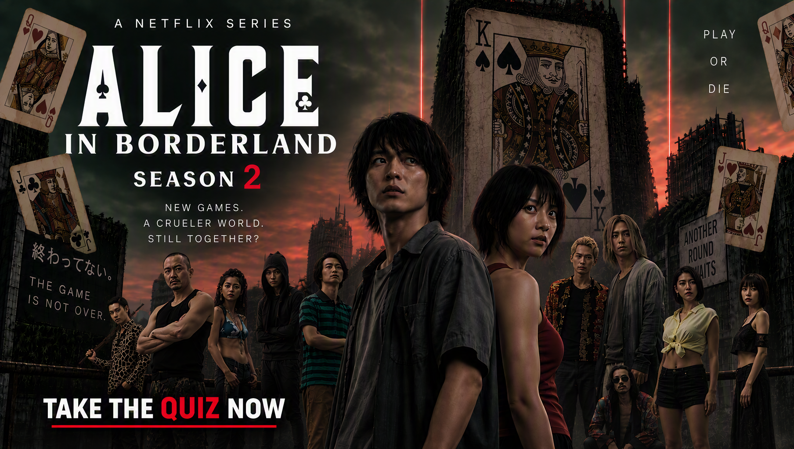

Alice in Borderland Season 2 Quiz
Think you can survive the Borderland? Test your knowledge of Arisu, Usagi, Chishiya, the Face Card games, Kyuma, Mira and the deadly challenges of Season 2.
Ready? See how much you remember about Alice in Borderland Season 2.
This quiz contains spoilers for Alice in Borderland Season 2.


About The Quiz
The Alice in Borderland Season 2 Quiz is a 30-question trivia challenge based on the second season of the Netflix series Alice in Borderland. The season follows Arisu, Usagi, Chishiya and the other survivors as they face the Borderland's Face Card games.
Season 2 expands the Borderland's deadly games, introducing powerful Citizens such as Kyuma, Kuzuryu and Mira while revealing more about the mysterious world surrounding the players.
This quiz focuses on the characters, Face Card games, game rules, important locations, mathematical challenges, major events and the ending of Season 2. It is designed for viewers who want to test how closely they remember the season.
Alice in Borderland Season 2 Details
Series: Alice in Borderland
Season: 2
Genre: Science fiction, survival, thriller and mystery
Main setting: The Borderland
Main characters: Arisu, Usagi, Chishiya, Aguni and Ann
Major challenges: Face Card games and the Borderland's deadly trials
How Quiz Works
The quiz contains 30 questions. Every question has four possible choices, but only one answer is correct. Read each question carefully and select the answer you believe is correct.
Each correct answer gives you 1 point, while an incorrect answer gives you 0 points. With 30 questions in total, your correct answers are converted into a final percentage.
Your final result represents how many questions you answered correctly. The result categories are based on your performance across the 30 questions.
Quiz Navigation
Starting the Quiz
Select START QUIZ on the opening screen to begin. The first question will appear with four possible answers.
Selecting an Answer
Read the question and all four choices before making your selection. Once you choose an answer, continue to the next question.
Next and Back Buttons
Use Next to move forward through the questions. The Back button allows you to return to an earlier question and review or change your selection. Your question number and progress are displayed as you move through the quiz.
Finishing the Quiz
Continue until all 30 questions have been answered. When you reach the end, submit your answers to finish the quiz and view your final score and knowledge result.
Try Again and Challenge Friends
After viewing your result, select TRY AGAIN to replay the quiz and attempt a higher score. You can also use SHARE MY RESULT or CHALLENGE YOUR FRIENDS to share your result.
FREQUENTLY ASKED QUESTIONS
How many questions are in the quiz?
There are 30 questions in total, and every question has four possible choices.
What is the maximum score?
The maximum result is 100%. Each correct answer contributes 1 point before the score is converted into a percentage.
What topics are covered?
The quiz covers Alice in Borderland Season 2, including Arisu, Usagi, Chishiya, the Face Card games, Kyuma, Kuzuryu, Mira and major events from the season.
Is this quiz only about the characters?
No. Character questions are only part of the quiz. Other questions cover game rules, locations, strategies, mathematical concepts and important plot details.
Which season does this quiz cover?
This quiz focuses specifically on Season 2 of Alice in Borderland and its major games, characters and story events.
Do I need to watch Season 2 before taking the quiz?
It is recommended. The questions are based on events, characters and details from Season 2, including information that may be difficult to answer without having watched it.
What does my score mean?
Your percentage shows how many of the 30 questions you answered correctly. A higher percentage means you correctly remembered more of the season's details.
Can I take the quiz again?
Yes. Select TRY AGAIN after completing the quiz to start another attempt and try to improve your score.
Can I challenge my friends?
Yes. Select CHALLENGE YOUR FRIENDS after completing the quiz to share the challenge and see whether your friends can beat your score.
Spoiler Warning
This quiz contains spoilers for Alice in Borderland Season 2. Questions may reveal important details about Arisu, Usagi, Chishiya, the Face Card games, Kyuma, Mira, Kuzuryu and other major events from the season.
If you have not watched Season 2 of Alice in Borderland, consider watching it before taking the quiz to avoid having important story details revealed.